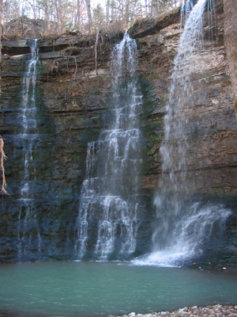

Local Attractions
Quaint antique shops, restaurants and more. Every visitor to Jasper needs to stop in at the Ozark Caf�! � one of Arkansas' most famous restaurants, right on the town square (across from the courthouse) since 1909.
Very informative about local wildlife, and a beautiful museum of the animals in the Ozark region. Gift shop, freshwater aquariums, wildlife paintings and mounts, many exhibits.
About 9 miles north of Jasper on Hwy 7. One of America's most spectacular caves and caverns, in pristine form. Also now includes tours of Crystal Dome, an 8-story cave. A comfortable 57 degrees year round inside! Tours take about 40 minutes.
(Alternate website)
With almost 200 miles of trails and 135 miles of canoeing and floats await you on one of America's top scenic waterways. This gorgeous river is one of the few remaining unpolluted, free-flowing rivers in the lower 48 states, offering both swift-running and placid stretches. The Buffalo became America's first national river in 1972, springing from the highest elevations of the Boston Mountains and descending to a 150 mile course to meet the White River. Multi-colored bluffs of sandstone, limestone and dolomite tower up to 500 feet in places along the river. You'll also find numerous places where you can wade into the river or swim.
Some of the best trailheads in the area are Lost Valley Trail and Hawksbill Crag (Whitaker Point). Both are relatively easy walks and will have waterfalls running during rainy season. There are numerous other trails in the area � at least 50 outstanding and beautiful hiking trails within a 20 mile radius Big Oak Cabin!
- Trail information is available from:
- Ranger Station, 870.446.5373
- Park Headquarters, 870.741.5443
- Buffalo National River, 870.741.5443
- www.nps.gov/buff
- Ozark National Forest, 870.446.5122, District Office � one (1) mile North of Jasper on Highway 7.
Additional information on hiking and swimming holes on the Buffalo River, and scenic driving tours is at the cabin and at the Jasper Chamber of Commerce, 204 N Spring St, on the square in Jasper.
- Information available from:
- Riverview Motel Canoe Rental, Jasper, Arkansas, 870.446.2616 or 446.5581.
- Buffalo Adventures Canoe Rental, Jasper, Arkansas, 870.446.5406.
- Gordon Motel, Inc., Jasper, Arkansas, 1.800.477.8509, 870.446.5252.
- Keller's Kanoes, Jasper, Arkansas, 870.446.2644
Guided trail rides are available, depending upon weather. Advance reservations are recommended.
- Information available from:
- Rimrock Cave Ranch - 870.553.2556
- Lazy Apple Lodge and Ranch - 870.428.5409
How this got its name, I don't know: it's a triple falls! Rumor has it that the stream above the cliff broke into two waterfalls for years, but a new section of rock broke loose years after the falls was named and it became a triple falls � just never got re-named. From Jasper, go west on Hwy 74, turn right at the Camp Orr sig and follow the steep dirt road to the bottom of the valley. Not advisable to drive down in wet conditions unless you have a 4-wheel drive. Ordinary cars can make it back up from the valley if the road is dry. Look for the sign on the left at the bottom saying "Twin Falls". The walking trail is less than �" mile to the falls.
Elk were reintroduced to Newton Country in the 1980s and since then, elk watching has become a favorite pastime of residents and visitors. Best viewing opportunities are early in the morning or at dusk.
On Hwy 74, about 10 miles west of Jasper.
One of Arkansas' most famous and historic restaurants. First opened in 1909.
More at a distance
Branson, MO - "The Nashville of the Ozarks" is just north over the Missouri border, about 40 minutes' drive, with its many entertaining musical shows, unique museums, and other attractions.
Eureka Springs Gardens - The premier gardens of Arkansas, just west of the quaint city of Eureka Springs, less than an hour away. Also the internationally acclaimed "Great Passion Play" is there.
Ozark Folk Center - The heritage of the Southern mountains is preserved and interpreted at this state park at Mountain View. Cottage crafts and evening performances of traditional Anglo-Saxon music and dance, classes offered in all these traditions. Weekend evenings on the town square where local musicians gather in groups to play and sing are not to be missed.
Ozark Heritage Arts Center - A restored 1938 structure houses a 400 seat theater and art gallery. The center features a year-round schedule of first class theatrical productions, plus touring exhibits and art shows.
Boone County Heritage Museum - Displays of railroad artifacts, Indian relics, medical instruments dating from the Civil War and a wide variety of World War I and II items. Searcy County Museum - Located in Marshall, the historic building houses local historical items, Civil War uniforms, 19th century farm implements and more.
Bass Pro Shop - The world's most exciting sporting goods store. Fishing and hunting Museum, trout pond, Ethel (the world's largest large mouth bas in captivity), and much more.
Concert Vineyards - Free tasting seven days a week at this Lakeview winery located about the banks of the White River near Bull Shoals Dam.
Norfork National Trout Hatchery - Located just below Norfork Dam, see millions of rainbow, brown and cutthroat trout in various stages of growth.
Long Pool Recreation Area - North of Dover on Scenic 7 Byway. Large natural pool on Big Piney Creek with high picturesque bluffs, fishing and hiking.
A useful map of many local attractions can be found here.
For more information about local sites of interest, feel free to call: Newton County Chamber of Commerce: 870.446.2455 Or call me � Dennis Gundersen (Oak Cabin Owner): 918.246.9901